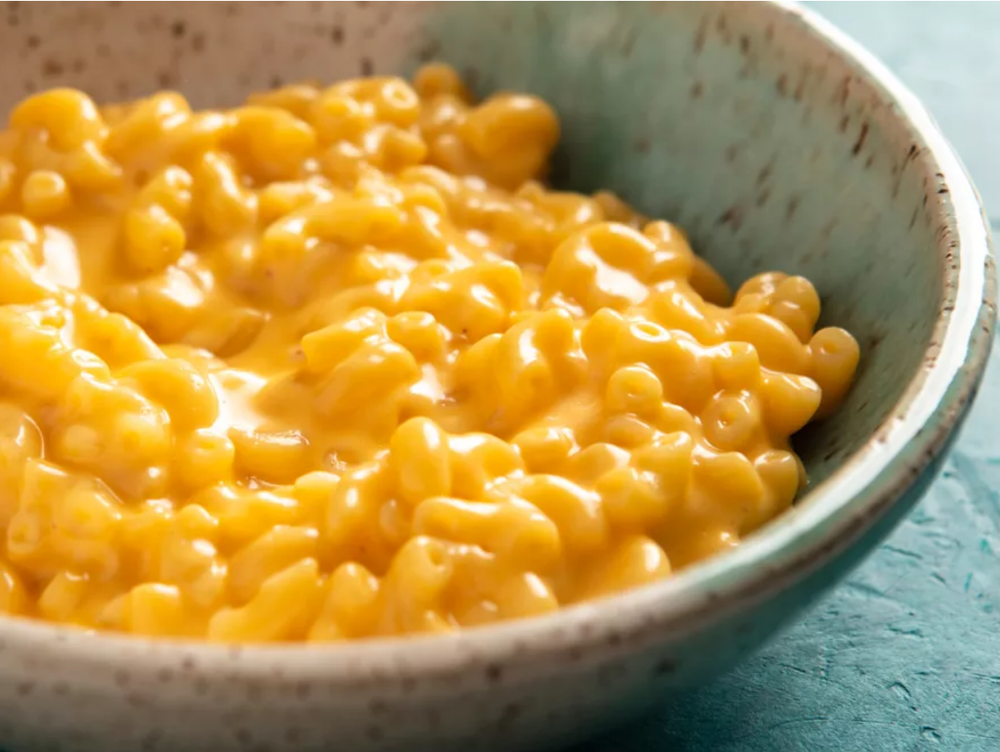

Mac and Cheese

Description
This creamy, homemade macaroni and cheese has fewer ingredients than the boxed version, and comes together in the same amount of time.
Ingredients
- 6 ounces (170g) elbow macaroni
- 6 ounces (180ml) evaporated milk
- 6 ounces (170g) grated cheddar cheese, or any good melting cheese
Steps
- Place macaroni in a medium saucepan or skillet and add just enough cold water to cover. Add a pinch of salt and bring to a boil over high heat, stirring frequently. Continue to cook, stirring, until water has been almost completely absorbed and macaroni is just shy of al dente, about 6 minutes.
- Immediately add evaporated milk and bring to a boil. Add cheese. Reduce heat to low and cook, stirring continuously, until cheese is melted and liquid has reduced to a creamy sauce, about 2 minutes longer. Season to taste with more salt and serve immediately.